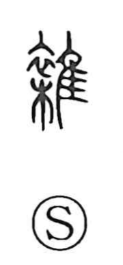

雑

Uncategorized
Kun: | On: zatsu, zo
miscellaneous ・ mixed ・ various ・ vulgar
Explanation
雑 is a phono-semantic character whose ancient form combined the clothing element 衣 with 集 as its phonetic. The element 集 not only supplies the sound but also evokes the idea of “gathering.” In the world of dyeing, saps from many plants were combined to color cloth, producing garments mottled with numerous hues; from this scene the character first expressed a gathering and mingling of colors. The sense then broadened to denote things mixed together in general—hence “miscellaneous”—and, by further extension, could describe what was regarded as low or vulgar when jumbled together.